Forward Converter 100V to 5V at 10A#
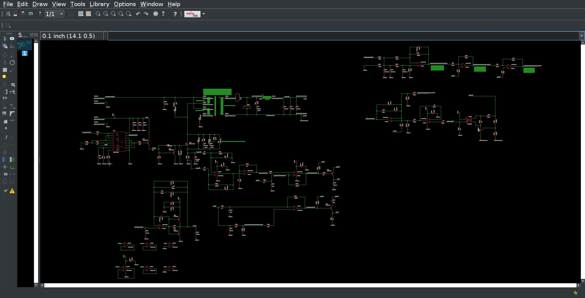{kind=link}
Introduction#
In this project, we will design and build a forward converter that will convert 100V to 5V at 10A. The forward converter is a type of switching power supply that is used to convert one voltage to another. The forward converter is a step-down converter that uses a transformer to step down the input voltage to the desired output voltage. The forward converter is a popular choice for power supplies because it is efficient, reliable, and cost-effective.
Specifications#
The item is a forward converter power supply that is fed with 100VDC and converts this input into 5VDC. The maximum load current is 10A. The item is intended mainly for household use, but can see operation outdoors. Specific requirements are shown below: Requirements:
Voltage input
100V nominal
130V maximum
70V minimum
Current available
10A maximum
Voltage Output
Nominal output voltage: 5V
Allowable ripple voltage: 50mV peak to peak
Current Output
Minimum load: 0 Amps
Maximum load: 10A
Environment
Interfaces to household wiring
Will see outdoor use in protected environment
Exposed to lightning
Components
Must use the TL494 PWM IC for parts commonality
Efficiency
Must be greater than 70%
Ciruit Design Discussion#
The item is an isolated power supply circuit that accepts a nominal solar panel voltage of 100V and outputs a regulated 5V at 10A. Additionally, the item counters the effects of a varying input voltage, by varying its output voltage accordingly. So for example, if the input voltage varies from 100V to 101V, the output varies from 5V to 4V, and vice versa. If the input voltage varies from 100V to 99V, then the output voltage varies from 5V to 6V.
This relationship is implemented as a means of stabilizing the Local Grid voltage in a microgrid community power situation. The item is to be placed between far flung loads, to compensate for voltage drops due to long transmission distances between solar panel source and load in a microgrid commnity power sitauation.
Since the amount of output current is 10A, we wanted to avoid high peak rectifier currents associated with a flyback converter. Therefore, a forward converter topology was chosen. The magnetics were chosen to be custom wound toroids.
The circuit was designed using a pick and simulate approach to save time intensive analysis time. Best / educated guesses were made for proper inductor values, a simulation was run, and the circuit performance was evaluated. This was also done for the frequency compensation.
The main PWM IC was required to be the TL494. This chip does not implement pulse-by-pulse current limiting control. This function was impleneted with additional circuitry to reduce the required loop compensation from a Type 3 amplifier to a Type 2 amplifier. This greatly improves transient response and simplifies the compenation circuit from three poles to two poles.
Another issue with the TL494 IC is that there is no official LTSpice 4 model available for it, although I was able to find a usable unofficial model. It required some modifications, which are described here: Hacking the TL494 LTSpice Model
The entire simulation schematic is shown in the image below. Further dicussion on each of its parts will be made in subsequent sections.
Circuit Simulation Schematic#
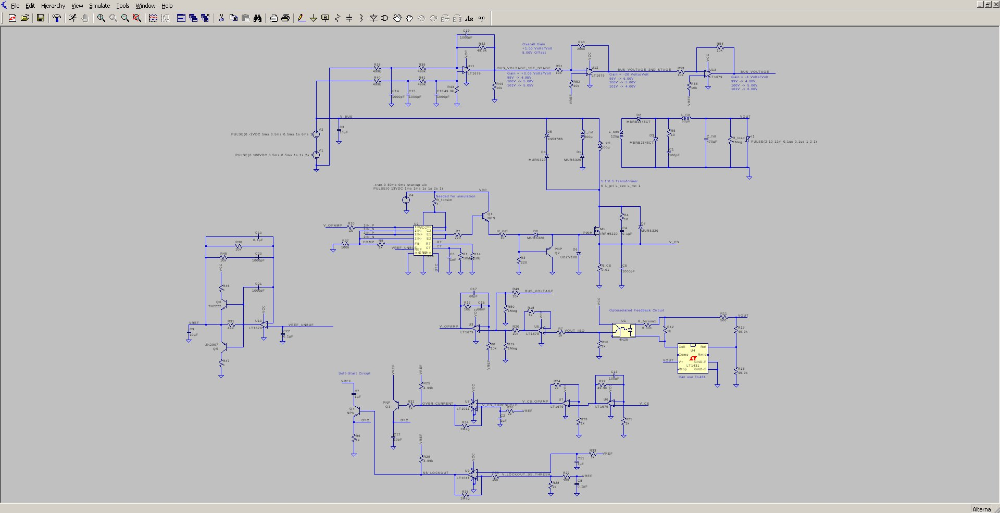{kind=link}
Circuit Description and Simulation Results#
PWM and Gate Drive#
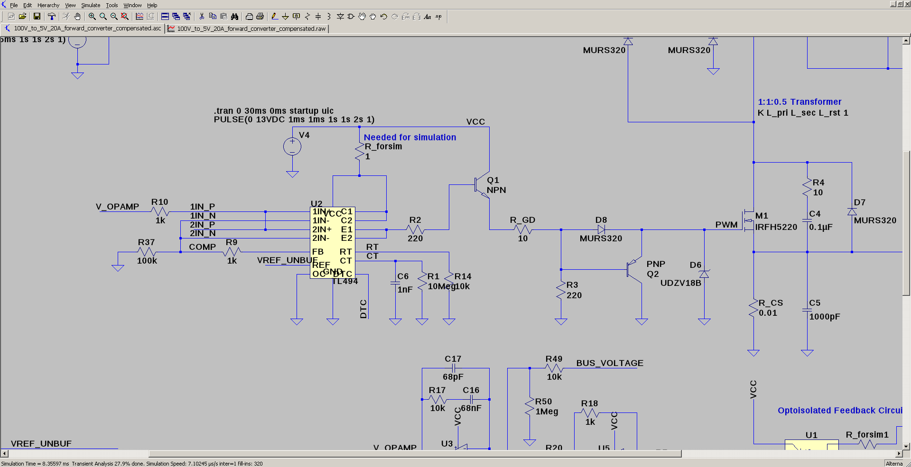The TL494 is used at the PWM IC. Both of its outputs are tied together to drive the base of Q1. Q1 provides the current boost necessary to drive the MOSFET M1. Turn - off of the MOSFET M1 is performed by Q2.
Main Power Switch Snubber#
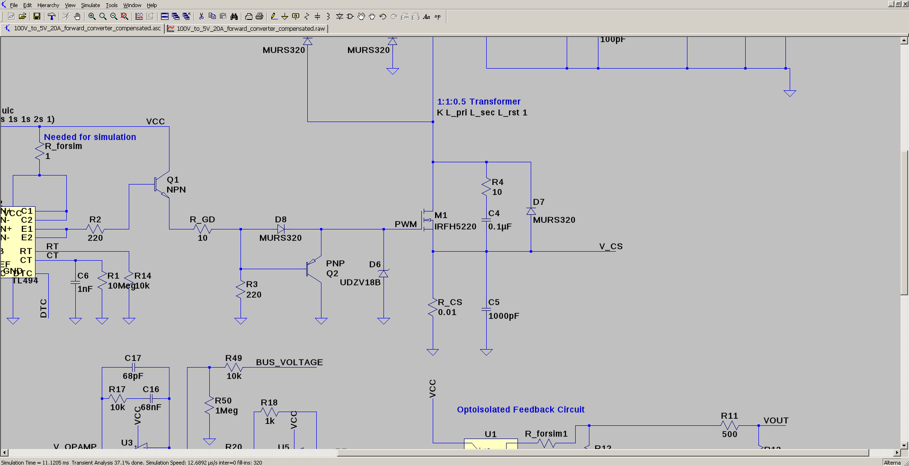R4, C4 and D7 form a snubber for the main power switch M1. The snubber is necessary to prevent the voltage across the MOSFET from exceeding its maximum rating. The snubber also reduces the turn-off time of the MOSFET, which reduces the power dissipation in the MOSFET.
Transformer, Rectifier, and Output Filter#
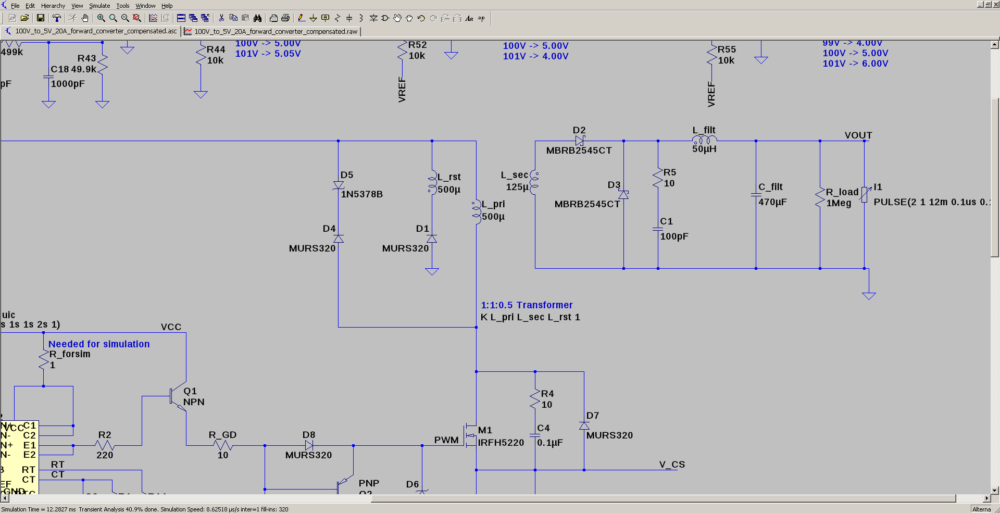D5 + D4 are a snubber and clipper to limit drain voltage to 180V. R5 and C1 are a snubber for rectifiers D2 and D3. L_filt and C_filt make the current and ripple filter, respectively. NOTE: must use output capacitors that have a combined ESR of about 0.3 ohms for stability. I1 is a stepped load for simulation purposes.
Optoisolator and Type 2 Error Amplifier Feedback#
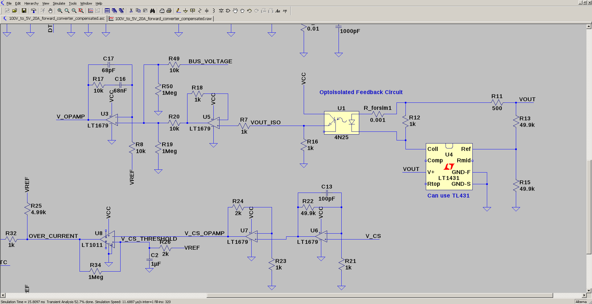R12 provides a bias current to the opto LED. VOUT can not fall below about 4 V, or the TL431 starts to shutdown. This is a problem for feedforward control, since if solar panel voltage goes up by 2V, then the output voltage needs to drop to 3V. We might need an auxiliary supply on the secondary side. Perhaps a small 5V to 12V prepackaged boost converter?
R11, R16, and the opto gain set the output voltage. Need a pot in place of R11 to dial it in to account for opto current transfer ratio variation. U5 provides buffering of the opto output. U3 is the EA. It is a type 2 error amplifier with dialed in frequency compensation. It also has a feedforward term injected via R49 (BUS_VOLTAGE).
Current Limiting Control and Soft Start#
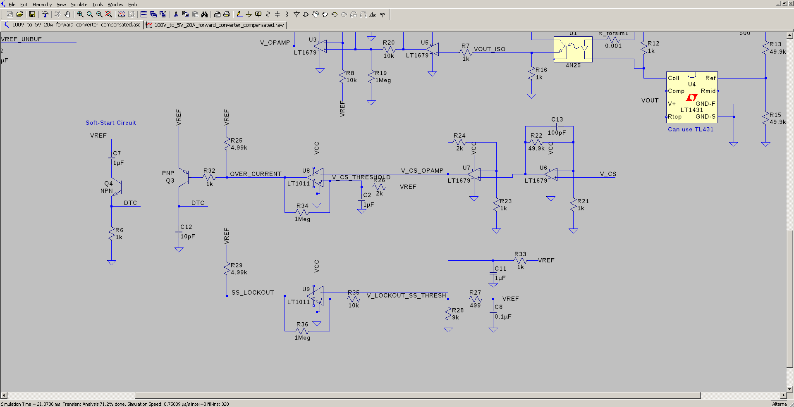V_CS is the raw voltage across the current sense resistor. It is gained up and filtered slightly by U6. The current loop needs to be fast, hence the slight amount of filtering. U7 provides a final gain of 3V/V. In order to adjust the current limit, the gain is adjusted on U7, not U6, so as to maintain the RC time constant in the feedback of U6.
The current limit threshold is soft-started by an RC formed by R26 and C2 (2k and 1uF). This voltage forms the threshold for the current limit comparator U8. Upon converter power up, the load wants to draw a huge current from the primary, potentially blowing things up. Having the current limit gradually come up prevents huge startup currents.
Upon converter power up, the main softstart holds off PWMs until VCC has reached 13V and the TL494 has sufficient voltage to operate. When the TL494 has sufficient voltage to operate, it activates it 5V reference output. This reference is input into R33 and R27. R27 and R28 divide down the reference voltage slightly, to about 4.5V. The reference at R33 is applied to the RC time constant R33 and C11. This allows soft-start time to be active, and once the Vref is good for sufficient time (3 ms), soft-start is locked out from manipulating the Dead Time Control pin on the TL494 by U9 and Q4.
If the primary current has reached the limit, U8 connects DTC to VREF, cutting the PWM pulse at that moment. This is pulse-by-pulse current limiting.
Buffered Voltage Reference#
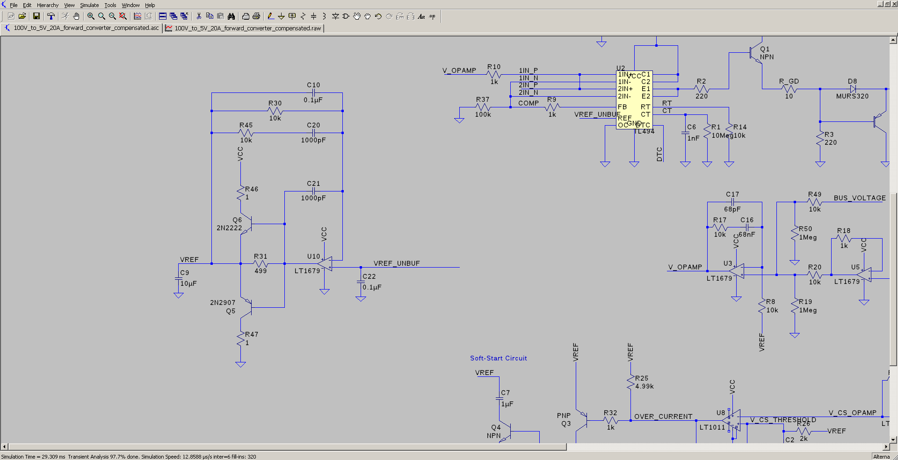U10 forms a buffer for the 5V reference from the TL494. The stability of the converter is strongly dependent on a stable reference. My current limit circuit is always banging DTC to VREF, causing perterbations, due to insufficient drive. About 50mA is necessary momentarily to charge/discharge caps. This requires a good current booster Q5 and Q6. Stability compensation is provided by C21, C20, R45, and C10. R46 and R47 are for current limit, but of limited benefit.
Input Voltage Feedforward Control#
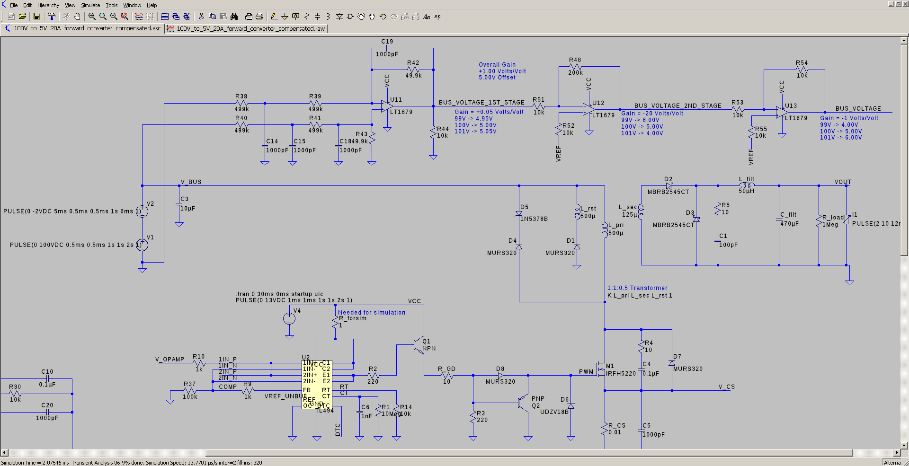V1 is the solar panel voltage (100V). V2 simulates a drop in panel voltage by substracting 2V at 5ms. U11 is a high-voltage difference amplifier. The gains are written in blue. It is non-inverting. It outputs 5V for 100V solar panel voltage. U12 applies gain to variations off of 5V and subtracts 10V (2xVREF) leaving a signal that swings 1:1 with solar panel voltage swings. So if the solar panel voltage goes from 100V to 101V, the output of U12 will be 4V (it is inverting). If the solar panel voltage from from 100V to 99V, the output of U12 will be 6V.
U13 simply inverts the output of U11, while maintaining the 5V offset (VREF derived). This signal is applied to the EA as a feedforward term. Since I don’t know the bus voltage a priori, I assume it is 100V, knowing how much offset to apply and subtract is critical. All of these offsets are necessary due to single supply op amp operation :(.
To accommodate variation in the solar panel bus voltage, another term will have to be generated that involves the difference between the actual bus voltage and 100V.
Simulation Results#
Soft Start, Load Step and Input Bus Voltage Step#
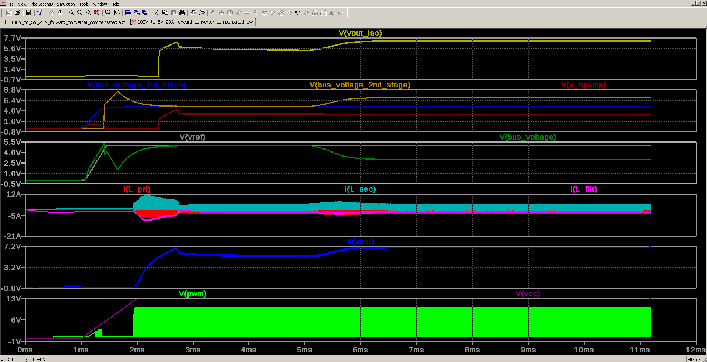V(PWM) is the PWM gate voltage. The soft start period runs from 1ms to 2ms. After that the gradually increasing current limit takes over. The load current is 2A until 12ms. The solar panel bus voltage shifts from 100V to 98V at 5ms. The output voltage rises from 5V to 7V (V(vout)).
Transformer and Filter Inductor Currents#

I(Lpri), I(L_sec) and I(L_filt) are the primary, secondary and filter inductor currents, respectively. V(vref) is the buffered reference voltage. Notice it is very stable. V(V_opamp) is the EA output voltage. It never saturates to either 13V or 0V; therefore, voltage loop control is maintained.
Load Step from 2A to 10A#
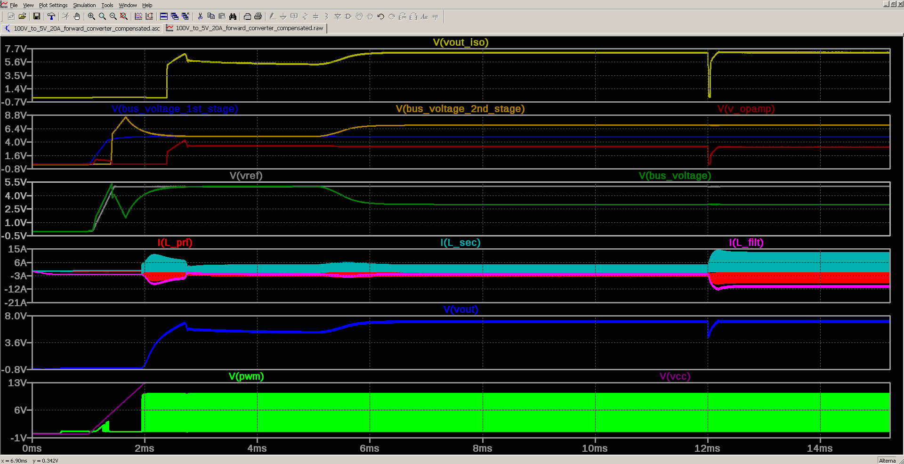At 12ms, the load abruptly changes from 2A to 10A. Transformer currents correspondingly increase, but voltage loop control is maintained. There is a slight dip in the output voltage, which is unavoidable, as no voltage control loop has infinite bandwidth. This response comes from the frequency compensation components around the EA.
Zoomed in View of Load Step#
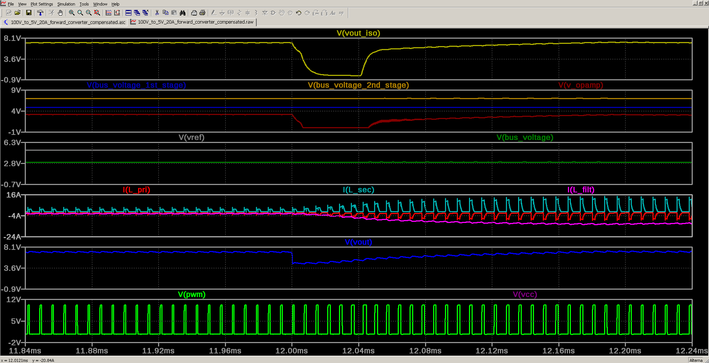Zoomed in view around 12ms, when load step occurs. Notice that the EA output saturates at ground, but recovers. To correct this, it will require lots of calculations to get the optimal frequency compensation values. I got these results by trial and error.
Overcurrent Protection#
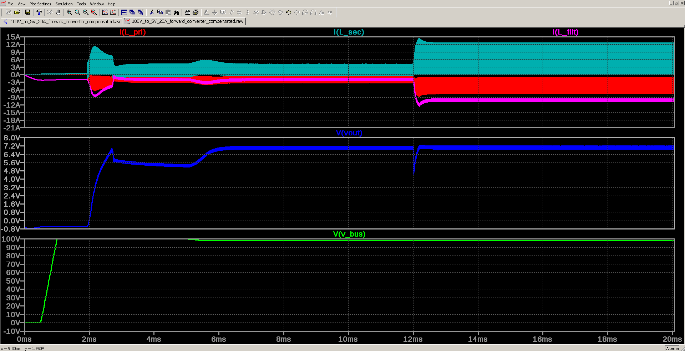This shows the transformer and filter inductor currents. Some of them are negative to show relative amplitudes, but the currents are actually all positive. Bus voltage drops from 100V to 98V at 5ms.Output voltage rises to 7V from 5V. Load step from 2A to 10A occurs at 12ms.
Overcurrent Protection, Load Step and Input Bus Voltage Step#
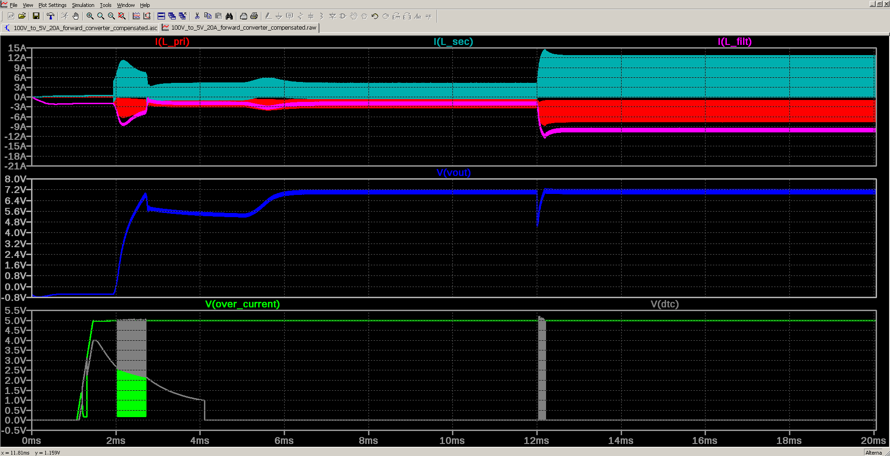The bottom pane shows the overcurrent comparator slamming DTC to VREF when too much current flows in the primary. This limits the primary current until things stabalize. Also the current blip during the load step is kept under control, as can be seen by the DTC trace at 12 ms.
Performance Under Load#
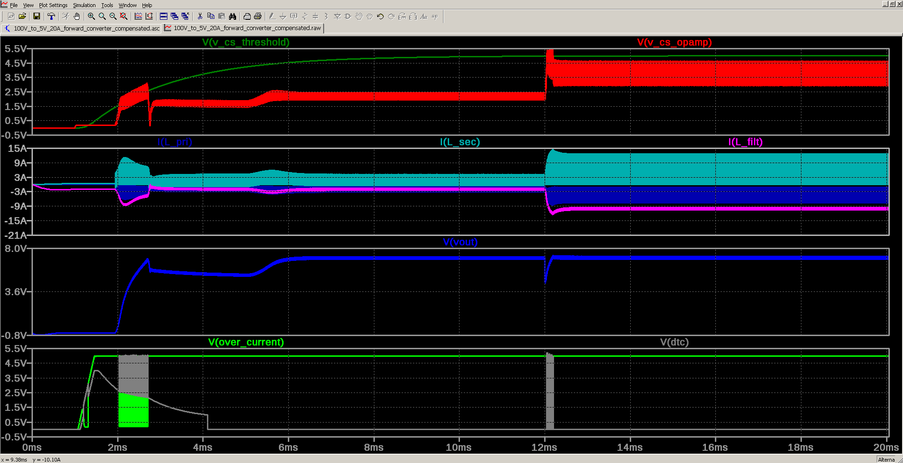Here I show the overcurrent threshold RC waveform in the top pane, and the conditioned primary current sense signal (in red). Notice that even under 10A of load to the 5V output, the primary current stays just under the threshold. NOTE: All of these are adjustable.
Schematic and PCB Design in Eagle CAD#
Schematic#
The schematic and PCB design were done in Eagle CAD. The schematic is shown below:
PCB Layout#
Top Layer#
The top layer of the PCB is shown below:
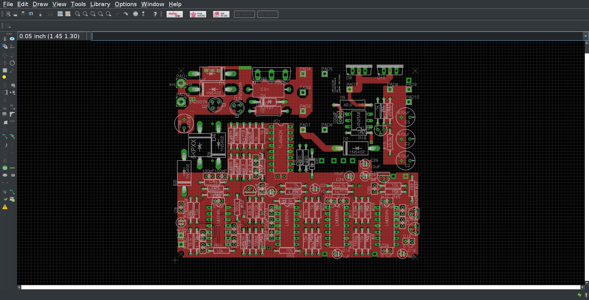Layer 2#
The second layer of the PCB is shown below:
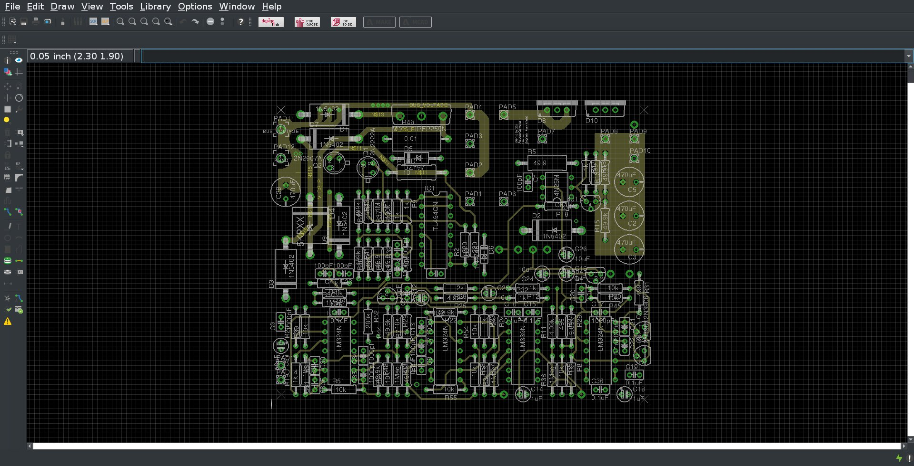Layer 3#
The third layer of the PCB is shown below:
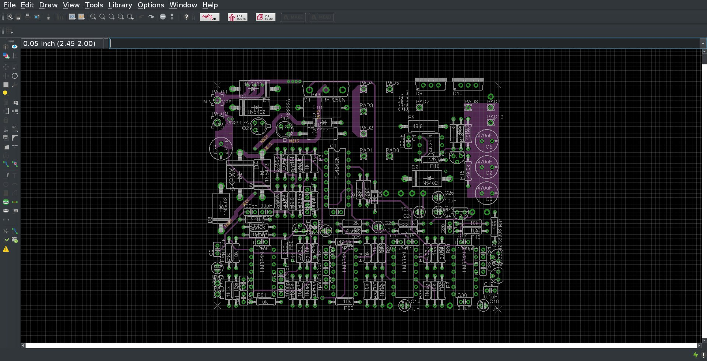Bottom Layer#
The bottom layer of the PCB is shown below:
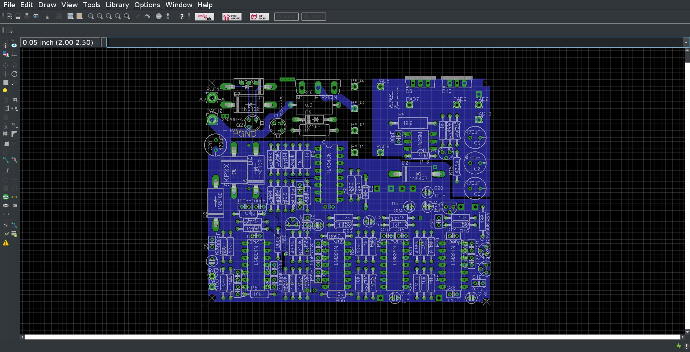